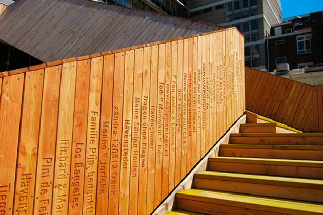

Quando falamos e criatividade, costumamos nos ater meramente aos conceitos de criação, imaginação, inovação. Entretanto, a criatividade vai muito além disso.
Atualmente, a criatividade tem ocupado um papel muito importante em nosso mundo: o de proporcionar um sentido mais profundo às coisas. Um "algo a mais".
Falando sobre economia
Apesar de não ser o foco principal da área, a criatividade pode agregar em muito as práticas econômicas - principalmente se estivermos falando de um produto ou serviço a ser comercializado.
Nos dias de hoje,
não é difícil encontrar um produto que você esteja precisando. Por exemplo: se você quiser um chinelo, poderá encontrá-lo em lojas de calçados, em lojas de roupa, em supermercados ou na palma de suas mãos - usando o poder de pesquisa da internet -. Se desejamos comer comida japonesa, basta abrir um aplicativo de delivery e você terá 35 estabelecimentos diferentes próximos à você.
Em meio a esse mar de oportunidades - e de concorrentes -,
como podemos destacar nosso produto? Como fazer os consumidores optarem pelo nosso chinelo ao invés do chinelo do lojista ao lado?
Agregando valor
Existe uma diferença entre um pedaço de algodão e uma camiseta: apesar de serem compostas do mesmo material, a camiseta foi trabalhada. Por ter sido trabalhado,
agrega-se valor ao algodão, transformando-o em algo novo, que pode ser vendido por 10x o preço da matéria-prima.
Se queremos nos destacar no mercado, precisamos abraçar a ideia da
economia criativa, que consiste na agregação de valor ao nosso produto ou serviço. Se não quisermos vender só mais um
commoditie, precisamos criar novas estratégias para que o consumidor se convença de que nossos diferenciais são suficientemente relevantes para ser a sua opção de compra.
Cidades podem ser criativas?

Passarela em Rotterdã
Quando falamos sobre
cidades e comunidades criativas, geralmente esbarramos em diversos conceitos diferentes. Entretanto, existem 3 pilares que são comuns à todas as definições:
- INOVAÇÃO: A inovação é um dos pilares que regem o sentimento de "o que pode ser feito pelas pessoas?". É sobre buscar coisas diferentes para melhorar o ambiente e a vida das pessoas que moram lá, buscando formas de alterar a realidade dos moradores do local.
- CONEXÃO: Uma cidade é composta por pessoas. Muitas pessoas. Como falamos nos capítulos anteriores, pessoas diferentes possuem modos de pensar diferentes. O pilar da "conexão" fala sobre permitir que as pessoas façam parte da cidade. Um bom exemplo disso é a passarela construída em Rotterdã, utilizando as verbas de um crowdfunding. Cada cidadão que doou para a sua construção teve o seu nome gravado em uma das madeiras do local.
- CULTURA: Por fim, o último pilar fala sobre valorizar a cultura que existe naquele local. A cidade é famosa por algum prato culinário? Exalte isso! Possui uma grande diversidade de pessoas? Deixe que elas tenham voz! É sobre ouvir o que as pessoas têm a dizer, e permitir que suas ideias contribuam para o crescimento e para a melhoria da comunidade.
Com isso, podemos perceber que a criatividade, mais uma vez, possui uma abrangência quase infinita. Utilizando dela, podemos criar uma nova realidade à nossa volta -
uma realidade que faça sentido para cada ser humano e que promova novas transformações, dia após dia.